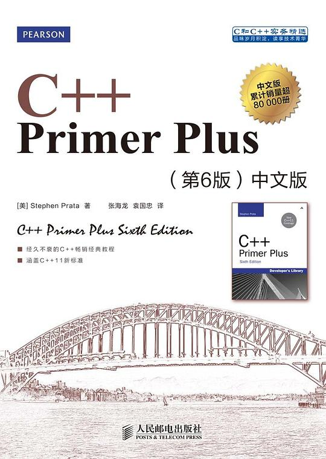
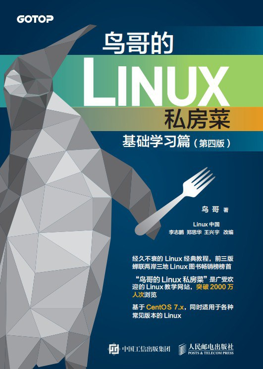
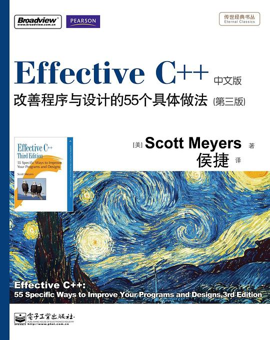

📚 书架
读过和正在读的书

算法导论（原书第3版）
算法导论（原书第3版）豆瓣评分：9.3 简介：在有关算法的书中，有一些叙述非常严谨，但不够全面；另一些涉及了大量的题材，但又缺乏严谨性。本书将严谨性和全面性融为一体，深入讨论各类算法，并着力使这些算法的设计和分析能为各个层次的读者接受。全书各章自

C Primer Plus 中文版（第6版 2020版）

C++ Primer Plus 中文版（第六版）

30天自制操作系统

鸟哥的Linux私房菜 基础学习篇 第四版
希腊古典神话
希腊古典神话豆瓣评分：8.4 简介：《希腊古典神话》反映了古希腊从公元前11世纪到9世纪被人们习称为“荷马时代”的那段历史中的社会生活面貌，赞颂了古希腊人民的智慧和创造。它以丰富的想象和精彩生动的情节把人们带入群岛环绕、海陆交错的爱琴海区
只工作，不上班
只工作，不上班豆瓣评分：7.6 简介：在《只工作，不上班》一书中，作者林安以“都市青年观察者”的身份深度采访了20个自由职业者，以感性、细腻但又不失洞察力的笔触将20位自由职业者“非常态”的工作、生活方式展现在读者面前。书中记录了勇士们的梦想

Effective C++
Effective C++豆瓣评分：9.5 简介：在国际上，本书所引起的反响，波及整个计算机技术的出版领域，余音至今未绝。几乎在所有C++书籍的推荐名单上，这本书都会位于前三名。
作者高超的技术把握力、独特的视角、诙谐轻松的写作风格、独具匠心的内容组织，